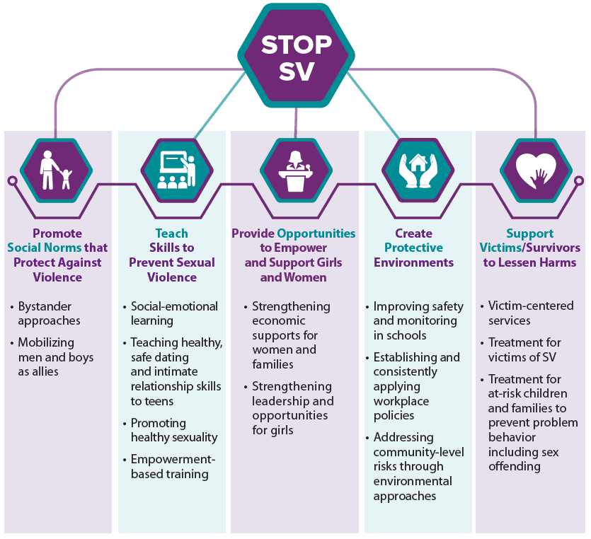

---------------------------------------------------------------------------------------------------------------------------------------
1. Create distraction that will draw the perpetrators attention away from the victim like creating a loud noise. However, maintain a healthy distance from where the situation is taking place to retain your safety.
2. Bring in an authority figure like a security guard, the police, a teacher, or adminstrator.
3. Work with another bystander, student, or friend that is nearby to help the victim.
4. Talk to the victim and ask them if they need help (for example walking with them if they are afraid to get attacked while walking alone.)
Source: RAINN, Sexual Harassment
